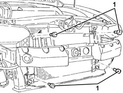
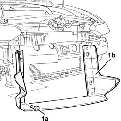
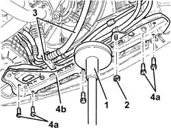
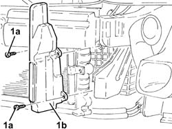
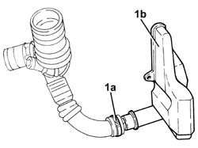

1048A57 lower resonator device - r r
- Path
- Procedures > 10 ENGINE > 1048 ENGINE AIR SUPPLY CIRCUIT > 1048A vacuum air circuit > 1048A57 lower resonator device - r r
- Kind
- repair procedure (removal / refitting; the operation number is the code)
- Applies to
- engines: 1.9 JTD 8v , 1.9 JTD 16v, 2.4 JTD 10v; all production periods
- Interactive page
- https://sloeber94.github.io/elrnDB-a156/en/#/3237786
Applies to: engines: 1.9 JTD 8v ; all production periods; only with equipment: Euro 3
 Removing
Removing
 Refitting
RefittingProceed with the removal 7055A43 central front grille - r r .
Proceed with the removal 7055A41 RIGHT FRONT GRILLE - R.R. .
Proceed with the removal 7210E10 R.R. FRONT BUMPER .
1. Undo the bolts fixing the air conditioner condenser to the engine cooling radiator.

Applies to: engines: 1.9 JTD 8v ; all production periods; only with equipment: Euro 3
1. Undo the bolts (1a) and remove the air duct for the engine cooling radiator (1b).

Applies to: engines: 1.9 JTD 8v ; all production periods; only with equipment: Euro 3
1. Position a hydraulic jack under the radiator lower crossmember.
2. Undo the nuts securing the power steering pipes brackets to the radiator bottom crossmember.
3. Release the air conditioning system pipes from the band on the lower radiator crossmember.
4. Undo the bolts (4a) and remove the radiator bottom bolt (4b).

Applies to: engines: 1.9 JTD 8v ; all production periods; only with equipment: Euro 3
1. Undo the bolts (1a) and remove the lower resonator (1b).

Applies to: engines: 1.9 JTD 8v ; all production periods; only with equipment: Euro 3
Refitting
RemovingRefit the lower resonator in its seating and secure it with its bolts.
Place the lower radiator crossmember back in its housing and secure it using the bolts.
Remove the hydraulic jack supporting the radiator bottom crossmember.
Fix the air conditioning system pipes to the band on the radiator lower crossmember.
Tighten the nuts securing the power steering pipes mounting brackets to the radiator bottom lower crossmember.
Refit the engine cooling radiator air duct in its seating and secure it with its bolts.
Tighten the bolts securing the air conditioner condenser to the engine cooling radiator.
Proceed with the refitting 7210E10 R.R. FRONT BUMPER .
Proceed with the refitting 7055A41 RIGHT FRONT GRILLE - R.R. .
Proceed with the refitting 7055A43 central front grille - r r .
Applies to: engines: 2.4 JTD 10v; all production periods; only with equipment: Euro 3
Removing
RefittingProceed with the removal 7055A43 central front grille - r r .
Proceed with the removal 7055A41 RIGHT FRONT GRILLE - R.R. .
Proceed with the removal 7210E10 R.R. FRONT BUMPER .
1. Undo the bolts securing the air conditioner condenser to the engine cooling radiator.
Applies to: engines: 2.4 JTD 10v; all production periods; only with equipment: Euro 3
1. Undo the bolts (1a) and remove the engine cooling radiator air duct (1b.
Applies to: engines: 2.4 JTD 10v; all production periods; only with equipment: Euro 3
1. Position a hydraulic jack under the radiator lower crossmember.
2. Tighten the nuts securing the power steering pipes brackets to the radiator lower crossmember.
3. Release the air conditioning system pipes from the band on the radiator lower crossmember.
4. Undo the bolts (4a) and remove the radiator lower crossmember (4b).
Applies to: engines: 2.4 JTD 10v; all production periods; only with equipment: Euro 3
1. Undo the bolts (1a) and remove the lower resonator (1b).
Applies to: engines: 2.4 JTD 10v; all production periods; only with equipment: Euro 3
Refitting
RemovingRefit the lower resonator in its seating and secure it with its bolts.
Place the lower radiator crossmember back in its housing and secure it using the bolts.
Remove the hydraulic jack supporting the radiator lower crossmember.
Fix the air conditioning system pipes to the band on the radiator lower crossmember.
Ttighten the nuts securing the power steering pipes mounting brackets to the radiator lower crossmember.
Fit the engine cooling radiator air duct in its seating and secure it with its bolts.
Tighten the bolts securing the air conditioner condenser to the engine cooling radiator.
Proceed with the refitting 7210E10 R.R. FRONT BUMPER .
Proceed with the refitting 7055A41 RIGHT FRONT GRILLE - R.R. .
Proceed with the refitting 7055A43 central front grille - r r .
Applies to: engines: 1.9 JTD 16v; all production periods
Removing
RefittingPosition the vehicle on the ramp.
Proceed with removal 1016A10 sound-proofing cover - r + r .
Proceed with removal 7055B54 under-engine guard - r r .
Proceed with removal 5530B10 battery - r+r .
Proceed with removal 5530B52 Battery DRIP TRAY/SUPPORT - R.R. .
Proceed with removal 1048A10 air cleaner filtering element - replace .
1. Working at the bench, loosen collar (1a) and disconnect the lower resonator (1b) from the sleeve.

Applies to: engines: 1.9 JTD 16v; all production periods
Refitting
RemovingConnect the lower resonator to the sleeve and tighten the collar.
Proceed with refitting 1048A10 air cleaner filtering element - replace .
Proceed with refitting 5530B52 Battery DRIP TRAY/SUPPORT - R.R. .
Proceed with refitting 5530B10 battery - r+r .
Proceed with refitting 7055B54 under-engine guard - r r .
Proceed with refitting 1016A10 sound-proofing cover - r + r .
Remove the car from the ramps.